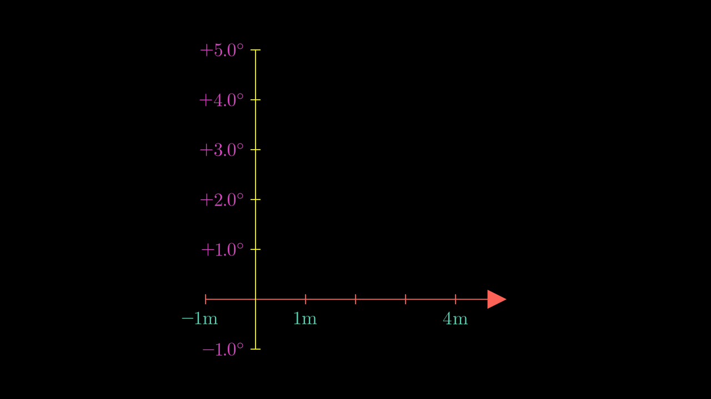

Basic 2D Graphs¶
In the previous versions of Manim there was a special scene called GraphScene, however, in the most recent versions it is no longer necessary, since all the functionalities of GraphScene were transferred to the Axes class, so we can have as many graphs as we want in the same scene (which could not be done in GraphScene).
Axes¶
The Axes are made up of two NumberLines, and you can configure each axis with all the NumberLine options. To define the axes the main thing is to define the scales and the size of the axes.
Configurations¶
axes = Axes(
# [start,end,step]
x_range=[-1,5,1],
y_range=[-1,5,1],
# Size of each axis
x_length=6,
y_length=6,
# axis_config: the settings you make here
# will apply to both axis, you have to use the
# NumberLine options
axis_config={"include_numbers": True},
# While axis_config applies to both axis,
# x_axis_config and y_axis_config only apply
# to their respective axis.
x_axis_config={
"color": RED,
"numbers_to_exclude": [2,3],
"decimal_number_config": {
"color": TEAL,
"unit": "\\rm m",
"num_decimal_places": 0
}
},
y_axis_config={
"color": YELLOW,
"include_tip": False,
"decimal_number_config": {
"color": PINK,
"unit": "^\\circ",
"num_decimal_places": 1,
"include_sign": True
}
},
)
Show result
Sometimes you will not want to define the length of the axes, sometimes you will want to define the size of each unit, if you do not specify the width of the axes you can define the unit_size.
axes = Axes(
# [start,end,step]
x_range=[-1,5,0.5],
y_range=[-1,5,1],
# Size of each axis
y_length=6,
x_axis_config={
# Instead x_lenght we can define "unit_size"
"unit_size": 2,
"numbers_with_elongated_ticks": list(range(-1,5)),
"longer_tick_multiple": 3,
# gap between axes and numbers
"line_to_number_buff": 0.6,
"numbers_to_include": list(range(-1,5)),
"decimal_number_config": {
"num_decimal_places": 0,
},
"font_size": 70
},
y_axis_config={
"include_numbers": True
},
)
self.add(axes)
Show result
Get coord from axes¶
There are two concepts to understand, the “coords” reference system and the “points” reference system.
Points: It is the reference system of the camera, and therefore it is absolute, we could say that it is our inertial system, the fixed system.
Coords: It is the reference system of each axis, if you create more than one axes then each one will have its own reference system.
Axes has the method Axes.coords_to_point and Axes.point_to_coords.
coords_to_point/c2p: It receives a two-dimensional vector \((x,y)\), and returns a three-dimensional vector \((x,y,z)\) which refers to the coordinates of yourAxesusing the reference system of the camera: Points.
point_to_coords/p2c: This method is the inverse, we enter a three-dimensional vector \((x,y,z)\) and it returns a two-dimensional coordinate \((x,y)\) that refers to the axes system coords.
Line graph¶
Making graphs with points should be easy for the student, we only need to make a polyline by changing the reference system using c2p, it is left as an exercise.
Show solution
def construct(self):
axes = Axes(
x_range = (0, 7),
y_range = (0, 5),
x_length = 7,
axis_config={"include_numbers": True},
)
x_values = [0, 1.5, 2, 3, 4, 6.3]
y_values = [1, 3, 2.5, 4, 2, 1.2]
coords = [axes.c2p(x,y) for x,y in zip(x_values,y_values)]
plot = VMobject(color=BLUE).set_points_as_corners(coords)
self.add(axes,plot)
However, Manim already has a functionality that allows us to do the same.
def construct(self):
axes = Axes(
x_range = (0, 7),
y_range = (0, 5),
x_length = 7,
axis_config={"include_numbers": True},
)
axes.center()
line_graph = axes.get_line_graph(
x_values = [0, 1.5, 2, 3, 4, 6.3],
y_values = [1, 3, 2.5, 4, 2, 1.2],
line_color=BLUE,
vertex_dot_style={"stroke_width": 3, "fill_color": RED},
stroke_width = 4,
)
self.add(axes, line_graph)
Show result
Use Text instead numbers in labels¶
def construct(self):
x_labels = [
"-\\frac{3\\pi}{2}", # -3pi/2
"-\\pi", # -pi
"-\\frac{\\pi}{2}", # -pi/2
"0", # Blank
"\\frac{\\pi}{2}", # pi/2
"\\pi",# pi
"\\frac{3\\pi}{2}" # 3pi/2
]
axes = Axes(
x_range = (-3*PI/2, 3*PI/2, PI/2),
y_range = (-1.5, 1.5, 0.5),
x_length = 10,
axis_config={"include_tip": False}
)
axes.center()
x_tex_lables = VGroup(*[
MathTex(t).next_to(axes.x_axis.n2p(x),DOWN) if x >= 0 else
# Shift pi<0 labels to left
MathTex(t).next_to(axes.x_axis.n2p(x),DOWN).shift(LEFT*0.2)
for t,x in zip(x_labels,np.arange(-3*PI/2, 3*PI/2+PI/2, PI/2)) if t != "0"
# Ignore 0 value
])
self.add(axes,x_tex_lables)
Show result
\(f(x)\) plots¶
Resolution¶
The plots are only approximations by means of bézier curves, so it is good to indicate the resolution of the graph:
def construct(self):
# Define axes
axes_left = Axes(
x_range = (0, 7, 1),
y_range = (0, 5, 1),
x_length = 7,
axis_config={"include_numbers": True},
)
axes_right = axes_left.copy()
axes = VGroup(axes_left,axes_right).arrange(RIGHT)
axes.width=config.frame_width-1
# Define graphs
function = lambda x: np.sqrt(x)
# good resolution
left_graph = axes_left.get_graph(function, x_range=(0, 7, 0.05))
# bad resolution |-----> Resolution
right_graph = axes_right.get_graph(function,x_range=(0, 7, 3))
self.add(
axes,
left_graph,right_graph
)
Show result
Style¶
The plots are like any VMobject, so it accepts stroke_width, stroke_color, it can be converted to DashedVMobject, etc.
More methods¶
This is another VMobject that has many more options, you already have the knowledge to be able to read the official documentation.
Parametric functions¶
def construct(self):
# Define axes
axes = Axes(
x_range = (-3, 3, 1),
y_range = (-3, 3, 1),
x_length = 7,
y_length = 7,
axis_config={"include_numbers": True},
)
parametric_func = axes.get_parametric_curve(
lambda t: np.array([
np.cos(t), # x
2*np.sin(t), # y
]),
t_range=(0,2*PI,0.1),
# Domain <---| |----> resolution
color=RED
)
equations = MathTex(r"""
c:\begin{cases}
\cos(t)\\
2\sin(t)\\
t\in [0,2\pi)
\end{cases}
""").scale(1.3)
equations.to_corner(UR)
self.add(axes,parametric_func,equations)
Show result
NumberPlane¶
It is the same as Axes but with background lines, it is ideal for making linear transformations, which we will see in the next course.
Transform Riemann rectangles¶
With this we can do it using:
def construct(self):
axes = Axes(
x_range = (-1, 12, 1),
y_range = (-1, 3, 1),
x_length = 12,
y_length = 7,
)
func = axes.get_graph(lambda x: 0.7*np.sqrt(x),x_range=[0,12,0.05])
rects = VGroup(*[
axes.get_riemann_rectangles(
func,
x_range=[1,11],
dx=dx,
input_sample_type="left",
stroke_width=dx if dx > 0.1 else 0.8,
)
.set_color_by_gradient(PURPLE,ORANGE)
.set_stroke(color=BLACK if dx > 0.1 else None)
for dx in [1/(i) for i in range(1,15)]
])
r = rects[0]
self.add(axes,func,r)
for rect in rects[1:]:
self.play(
Transform(r,rect)
)
self.wait(0.3)
self.wait()